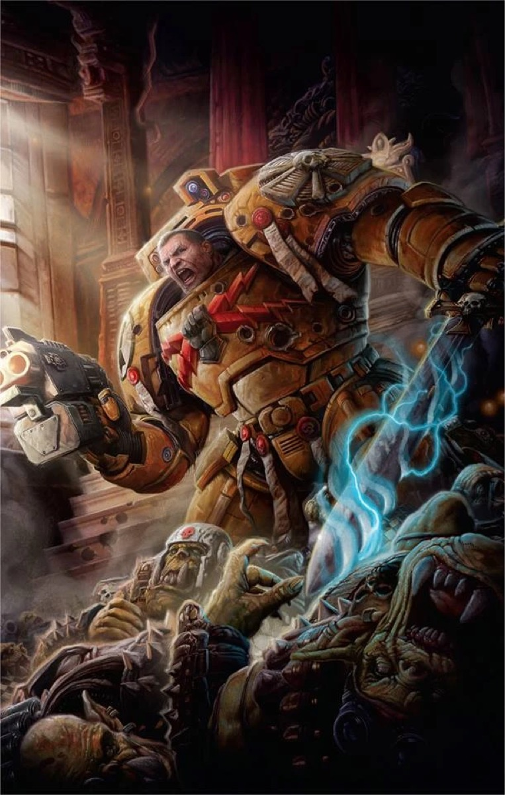

War of the Beast
| War of the Beast | |
|---|---|
| Also called the Beast Arises | |
 Koorland, the Last Son of Dorn, Lord Commander of the Imperium during the war Artwork © Games Workshop | |
| Date | 544–546.M32 |
| Location | Segmentum Solar and the whole Imperium; decisive battles at Ardamantua, Terra and Ullanor |
| Result | Pyrrhic Imperial victory; the Beast slain at the Third Battle of Ullanor; the Deathwatch founded; the Fourth Founding of the Adeptus Astartes; the Beheading followed |
| Belligerents | |
| Imperium of Mankind | Orks |
| Commanders and leaders | |
| † Killed in action · (MIA) Missing | |
| Units involved | |
| Strength | |
| Casualties and losses | |
| Imperial Fists: | Orks: |
| Billions of civilians killed; the Proletarian Crusade of millions crushed on the Attack Moon; the falling moon killed hundreds of millions on Terra and burned much of the Imperial Palace | |
The War of the Beast, also called the Beast Arises or the Waaagh! of the Beast, was the largest invasion of the Imperium of Mankind by the Orks in recorded history and the greatest war the Imperium fought between the Horus Heresy and the Era Indomitus. It lasted from 544.M32 to 546.M32 and was led by an Ork warlord known only as the Beast. It brought the Imperium's long and prosperous period of recovery, remembered as the Time of Rebirth, to an end.[2]
The war began with a routine campaign against a swarm of insectoid xenos on the world of Ardamantua, and within months it had grown into a galaxy-wide catastrophe. Orks of unusual size and discipline, transported in vast artificial moons that tore through the fabric of space, overran whole sectors of the Segmentum Solar, and one of the moons took station above Terra itself. The High Lords of Terra were divided and ineffective. The response that finally broke the invasion came from the Space Marines: first the Imperial Fists and their successor Chapters under the Last Wall Protocol, then the primarch Vulkan, who was found alive after fifteen centuries, and at last a series of assaults on the Ork capital world of Ullanor.[2][3]
The war ended in a victory that the Imperium could scarcely afford. It left behind the Deathwatch, a standing force to watch the xenos threat; a Founding of new Chapters larger than any since the First Founding; and a political settlement that within a generation produced the Beheading, the murder of the entire council of the High Lords.[2][4]
Background
[edit]The Time of Rebirth
[edit]By the middle of the 32nd millennium the Imperium had enjoyed some six hundred years of comparative peace. The Traitor Legions had been driven into the Eye of Terror in the Great Scouring, and the Codex Astartes had given the Space Marines their Chapter organisation. The Imperial historians of the age called it a time of rebirth, and a quotation attributed to Maximus Thane, Chapter Master of the Fists Exemplar, captures the mood: the shame of the Heresy lay behind, there would be foes but never again a war on that scale, and Mankind would not be brought to the brink a second time.[2]
The Imperium believed the Orks to be a spent force. They had been humbled by Horus at Ullanor in the Great Crusade, and Imperial strategists assumed that they had never recovered. The assumption was false, and the Navy's dispositions reflected it. Under the Lord High Admiral of the Navy, Lansung, the greater part of the fleet was strung along the frontiers, far from Terra.[2]
The High Lords
[edit]The government at Terra in 544.M32 was a council of twelve High Lords, presided over by a Lord Commander of the Imperium, Udin Macht Udo. It included the Fabricator-General of Mars, Kubik; the Ecclesiarch, Mesring; the Grand Master of Assassins, Drakan Vangorich; the Lord High Admiral; the Captain-General of the Adeptus Custodes; and the Inquisitorial Representative. Few of them agreed on anything, and the war was fought in its early months by commanders who could expect no clear orders from Terra.[5]
Course of the war
[edit]Ardamantua
[edit]In 544.M32 the Imperial Fists Chapter sent its Shield Company to Ardamantua, six solar weeks from Terra, to exterminate the Chromes, an insectoid species some eighty-eight billion strong that was migrating toward the core worlds. The Chromes were fleeing something. When Ardamantua's gravity began to fail, they made a last assault on the Imperial lines and Chapter Master Cassus Mirhen was killed. The High Lords sent the whole Chapter and a fleet under the Lord Commander Militant Heth to relieve the world.[2]
An Ork Attack Moon, a planetoid fitted with engines, void-weapons and a subspace drive that let it pass in and out of realspace, materialised above Ardamantua and destroyed Heth's fleet after he had sent a last astropathic warning. On the surface, Orks of far greater size than any recorded fell on the Imperial Fists and the Chromes alike. Four Imperial Fists survived, three of whom died under Mechanicus care. The last was Second Captain Koorland of the Daylight Wall Company, who found himself the sole survivor of his Chapter.[3]
The spread of the Waaagh!
[edit]Over the following months the Orks overran sector after sector of the Segmentum Solar. There was more than one Attack Moon. The gravitic and psychic storms they raised drove millions mad, and some survivors formed cults that worshipped the Beast. The Orks cut them down with the rest. In the Senatorum Imperialis the High Lords argued. Lansung gathered the greater part of Battlefleet Solar at the Glaucasian Gulf and refused to cooperate with the Astra Militarum. Vangorich learned that Mechanicus agents were present among the Orks, for reasons he did not yet understand.[5]
At Port Sanctus the Inquisitorial Representative, Marguerethe Wienand, goaded the Navy into relieving the shipyards, which an Attack Moon was besieging. The Orks teleported boarding parties through void shields, but their appetite for melee scattered their own fleet. The Navy threw its remaining ships and a swarm of attack craft at the moon, collapsed its gravitic generators and destroyed it, though the blast took many of the Imperial ships with it. It was the first moon to fall. A second appeared over Terra within days.[2]
The Proletarian Crusade
[edit]Every segmentum was under attack, and the great Chapters were bogged down in campaigns of their own. On Terra, the Attack Moon in orbit caused riots that the Adeptus Arbites could not contain, and the High Lords barricaded themselves in the Imperial Palace. The Fabricator-General refused to send help from Mars.[2]
Juskina Tull, Speaker of the Chartist Captains, and the Ecclesiarch Mesring proposed a Proletarian Crusade: millions of Frateris Militia and civilian volunteers, carried in whatever voidcraft could be found. Vangorich, Veritus and Lansung condemned the plan as madness and were overruled. The Crusade landed millions of troops on the Attack Moon, with several hundred tanks. For a time it prevailed. Then the Orks moved the moon's mountains and crushed the whole force between them.[5]
A single Crusade ship that had survived landed on Terra, and three Orks came out. One, who named himself Bezhrak, spoke Gothic. He demanded the surrender of Terra and, when the High Lords could not answer, left in contempt. Immediately after, a party of Harlequins led by the Shadowseer Lhaerial Rey fought through the Lucifer Blacks to the Inner Palace, where the Custodians cut them down at the Eternity Gate. Rey was taken alive and spared on the intervention of Vangorich and Veritus. She claimed to bear a message from the Farseer Eldrad Ulthran of Ulthwe: that the craftworld had stilled the Warp about Terra to aid the Imperium, and that a greater threat from the Ruinous Powers was gathering. Imperial records do not agree on what was done with the warning.[5][6]

The Last Wall
[edit]Koorland invoked the Last Wall Protocol, a contingency laid down by Rogal Dorn for a threat to Terra. High Marshal Bohemond of the Black Templars gathered the scattered successors of the VII Legion at the Phall system: the Black Templars, Crimson Fists, Excoriators and Fists Exemplar, with the Iron Knights answering the call. Their fleet, twenty battle barges and strike cruisers carrying about 2,800 Space Marines, emerged directly above the Attack Moon at Terra. The Fabricator-General at first held back, but when pressed sent Basilikon Astra, five regiments of Skitarii and seven cohorts of the Legio Cybernetica. Cyclonic torpedoes disabled most of the moon's weapons, and Terminators landed on its surface. The Iron Knights arrived at a critical moment and the Marines destroyed the moon's teleport portal, cutting it off from reinforcement. Their Chapter Master Malfons died covering the retreat, fighting a Warboss the size of a Dreadnought.[3]
The Lord Commander, Udo, who had taken the credit for the victory, rebuked the Space Marines for assembling a Legion-sized force, ordered them to disperse and ordered the loss of the Imperial Fists concealed. When Udo moved to bar the Inquisition from the Senatorum, Koorland acted. With Vangorich, Veritus, Wienand and the Grand Provost Marshal Vernor Zeck, he deposed Udo, and the council, unable to oppose him, named him Lord Commander of the Imperium.[5]
His first act was to confront Mars. The Mechanicus, it emerged, had been experimenting with the Orks' teleportation technology in the hope of removing the Red Planet from the Sol System, and a Tech-Priest, Eldon Urquidex, who knew the true origin of the Beast, had killed an Officio Assassinorum team sent to investigate. A force of the Fists Exemplar under Maximus Thane met the Skitarii at Pavonis Mons, and an errant shot started a brief firefight. Only the intervention of Kubik, who was on Terra, and an appeal from Koorland for unity ended it. From the half-servitor Urquidex, Koorland learned the location of the Beast's homeworld, the world where Horus had been made Warmaster, and sent a call-to-arms across the Imperium.[5]
The return of Vulkan
[edit]Veritus told Koorland that the lost primarch of the Salamanders, Vulkan, had been found on the world of Caldera, waging a lone war against the Orks. The Orks were converting Caldera into an Attack Moon, draining its core into orbit with a gravitic generator. Vulkan, who would not leave until the world was saved, held them off with his hammer Doomtremor until Koorland's ad hoc fleet destroyed the generator. He agreed to return to Terra, chided the High Lords for their quarrels without purging them, and declared that he would lead the Crusade to Ullanor himself.[2][3]
The First Battle of Ullanor
[edit]The Crusade included the Last Wall Chapters, the Blood Angels, Dark Angels, Space Wolves and Ultramarines,, with Astra Militarum regiments, Skitarii, Imperial Knights and Titans. Ullanor was an Ork world of ramshackle but organised settlements, shielded against bombardment. The Orks turned the planet into an Attack Planet and drew the Imperial forces into killing grounds in the city of Gorkogrod, built on the ground where the Emperor and the primarchs had stood at the Triumph. The Imperials lost nearly half their Astra Militarum regiments and one Space Marine in three. The Venenum assassin Esad Wire, sent to find the Beast, found tens of thousands of mega-armoured Orks in the temple of Gork and Mork and returned to warn the Crusade.[2]
The temple was itself a Mega Gargant. Vulkan led the last three thousand Space Marines in an airborne assault on it and found a ten-metre idol of an Ork in mega-armour, which moved. It was the Beast. He killed the Crimson Fists and Ultramarines Chapter Masters, Quesadra and Odaenathus, and swatted aside the Blood Angels captain Valefor. Koorland understood that the primarch meant to fight alone and ordered a withdrawal. The Beast spoke Gothic and taunted Vulkan that he had brought humanity to its knees. The primarch seized him and both fell into the generator at the heart of the walker, where Vulkan, rather than being consumed by the Waaagh! energy, took it into himself and drove his hammer into the Beast's face. The generator exploded and the temple with it, and both were presumed dead. The Orks' morale broke. As the Crusade came into orbit above Terra an Ork chant filled every Imperial vox channel: I am Slaughter.[3]
The Deathwatch
[edit]
The chanting continued for weeks. Either the Beast lived or another had taken his place. Koorland and Vangorich concluded that a new method was needed: small kill-teams of Space Marines drawn from different Chapters, under a single command, to hunt the Orks' strategic assets and eventually the Beast himself. The Master of the Administratum, Tobris Ekharth, held that this violated the Codex Astartes; Mesring called it blasphemy. A first vote went against, with Vangorich alone in favour. Then the dormant moon above Terra woke, its gate repaired, and the Beast announced that he would slaughter all mankind. On a second vote only Mesring opposed.[4]
The first recruits were the survivors of Ullanor, who repainted their armour black in mourning. This was the Deathwatch, placed under the oversight of the Inquisition, with a Space Marine, the former Wolf Lord Asger Warfist, as its Chapter Master. Its first act was to teleport a kill-team onto the moon to plant Mechanicus beacons built from Ork technology, so that the moon could be sent out of the Sol System. The Mechanicus could not master it and moved only half, leaving the rest to shatter. The wreckage fell on Terra, burned much of the Imperial Palace and killed hundreds of millions.[4]
The Second and Third Battles of Ullanor
[edit]Koorland resolved to counter the Orks' psykers. Veritus directed him to Nadiries, in the Segmentum Pacificus, where the last bastion of the Sisters of Silence had survived for fifteen hundred years, cast out by an Imperium that distrusted them. They agreed to help only when told that Vulkan had given his blessing. The Deathwatch captured Ork psykers, and on Incus Maximal the Sisters' null field turned the Orks' psychic gestalt back on itself, and a reverse Waaagh! swept through the horde.[4]
The second assault on Ullanor was smaller and carried by Black Ships, the Navy having been broken. Koorland led an assassination team: Bohemond, Warfist, a kill-team under the Raven Guard Sergeant Tyris, Esad Wire, a Skitarii Ranger, six Sisters under the Knight Abyssal Kavalanera Brassanas, a commissar and two Ogryns. Damaged warships were rammed into the planetary shield and the team teleported into Gorkogrod. The Beast knew they were coming. In a chamber of six thrones and six banners, the Sisters performed their ritual, an Ork psyker imploded and a reverse Waaagh! swept across Ullanor. Koorland's team killed the Ork on the throne. Then a larger one appeared, the Beast who had fought Vulkan, and the dead Ork was revealed as one of six Prime-Orks. The Beast crushed Koorland under his boot, and the Imperials recovered the body and fled.[4]
The war was now at its lowest. A fleet of space hulks destroyed what remained of Battlefleet Solar, and Mesring was killed, with a last garbled astropathic message urging worlds to open their gates to the Beast. Several Cardinal Worlds obeyed and were massacred. At Koorland's funeral on Inwit, Maximus Thane, Chapter Master of the Fists Exemplar, decided to act without the High Lords. Allied with Vangorich and Kubik, he first restored the Imperial Fists, extinct since Koorland's death: a thousand Space Marines drawn from every successor Chapter of Dorn paraded in the Palace in the VII Legion's livery. Then he planned a third assault on the same pattern, with another captive psyker and the Sisters of Silence, on a larger scale. The Mechanicus dropped asteroids on Ullanor, where trillions of Orks now lived, and a modified asteroid landed under control and flattened much of Gorkogrod. Five attack groups followed: the Imperial Fists and the Sisters under Thane; the Mechanicus under Zhokuv; the Last Wall Chapters under Bohemond; the Deathwatch under Warfist; and in orbit the fortress-monastery Phalanx.[3][4]
Thane's group fought its way to the throne chamber and faced a Prime-Ork they took to be the Beast of Beasts. With the last captive psyker, the Sisters under Brassanas created a second reverse Waaagh!, which killed the Orks in the palace and blew off the head of the Beast just before he could kill Thane. The Waaagh! collapsed.[4]
The Beast
[edit]Imperial accounts of the Beast's nature are unsettled. Ordo Xenos reports describe an Ork warlord of unprecedented size and cunning who spoke Gothic and organised his people into something like a state; later reports found that there had been six Prime-Orks, the largest of them the Beast of Beasts. Mechanicus sources, which are partial, hint that the Beast was not wholly a creature of nature, and the Fabricator-General's agents are recorded among the Orks from the war's first months. The Ordo Xenos has declared the matter closed.[6]
Aftermath
[edit]Thane was named Lord Commander of the Imperium and decreed that the Imperium would found as many new Chapters as there was gene-seed in the vaults of Terra to supply, the greatest Founding since the First. Every Chapter was ordered to give up a portion of its veterans for it, and the tithe of gene-seed was doubled for a century. The Imperial Fists would no longer garrison Terra and became a crusading, fleet-based Chapter, to help the stricken worlds rebuild. Before leaving, Thane made Drakan Vangorich Lord Protector of the Imperium, to act as his voice and his hand. Vangorich in turn found that Kubik, instead of destroying Ullanor, had used Ork technology to teleport the city of Gorkogrod aboard the Mechanicus ship Ark Majesty, to plunder it for its technology. His discovery led to the Beheading, in which every High Lord but Wienand was killed in a single solar day.[2]
The war's institutional legacy was the Deathwatch, now the principal xenos-hunting force of the Imperium, and the Ordo Xenos, the order of the Inquisition that directs it. The Fourth Founding raised scores of new Chapters, among them the Halo Brethren and Sable Swords. The Lord Commander's office was abolished in the settlement that followed the Beheading and was not revived until the return of Roboute Guilliman at the end of the 41st millennium.[2]
Of Vulkan, the Imperium has no certain record. He was last seen falling into the generator on Ullanor. Salamanders tradition holds that he survived and was lost again; see Vulkan.[2]
Timeline
[edit]Dated events of the war and its aftermath. See also 32nd millennium.
| Date | Event |
|---|---|
| 522.M32 | The Ork space hulk Da Iron Worm ravages the Uhulis Sector. |
| 544.M32 | An Ork Attack Moon destroys the Imperial Fists fleet at Ardamantua; Koorland is left the last of his Chapter. |
| 544.M32 | The Navy destroys an Attack Moon at Port Sanctus; another appears above Terra. |
| 544–545.M32 | Koorland invokes the Last Wall Protocol; the successors of Rogal Dorn gather at Phall and storm the Attack Moon at Terra. Koorland becomes Lord Commander of the Imperium. |
| 545.M32 | Vulkan returns; the Deathwatch is raised; the Sisters of Silence are restored. |
| 545.M32 | Koorland killed at the second battle of Ullanor; Maximus Thane succeeds him. |
| 546.M32 | The Beast destroyed at the third battle of Ullanor; Thane orders the Fourth Founding. |
| 546.M32 | The Beheading of the High Lords by Drakan Vangorich. |
| c. 626.M32 | Thane kills Vangorich in the Eversor Temple. |
| 646.M32 | Agnathio restores the council of High Lords. |
See also
[edit]
References
[edit]- ^ "War of the Beast". Warhammer 40k Wiki (Fandom).
- ^ a b c d e f g h i j k l m I Am Slaughter - The Beast Arises, Book 1 (novel) by Dan Abnett. Predator, Prey - The Beast Arises, Book 2 (novel) by Rob Sanders.
- ^ a b c d e f The Emperor Expects - The Beast Arises, Book 3 (novel) by Gav Thorpe. The Last Wall - The Beast Arises, Book 4 (novel) by David Annandale.
- ^ a b c d e f g Throneworld - The Beast Arises, Book 5 (novel) by Guy Haley. Echoes of the Long War - The Beast Arises, Book 6 (novel) by David Guymer.
- ^ a b c d e f The Hunt for Vulkan - The Beast Arises, Book 7 (novel) by David Annandale. The Beast Must Die - The Beast Arises, Book 8 (novel) by Gav Thorpe.
- ^ a b Watchers in Death - The Beast Arises, Book 9 (novel) by David Annandale. The Last Son of Dorn - The Beast Arises, Book 10 (novel) by David Guymer.
Further reading
[edit]- Records of the Last Wall Protocol (M32). Imperial Fists Archive, Terra. The Chapter's own record of the successors' muster.
- Annals of the War of the Beast (M32, revised M33). Officio Militaris, Terra.
- Lexicanum Martialis. Officio Militaris. Entries on the Orks and the Deathwatch.